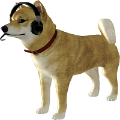

Cats
Cats are similar in anatomy to the other felids, with a strong flexible body, quick reflexes, sharp retractable claws, and teeth adapted to killing small prey. Cat senses fit a crepuscular and predatory ecological niche. Cats can hear sounds too faint or too high in frequency for human ears, such as those made by mice and other small animals. They can see in near darkness. Like most other mammals, cats have poorer color vision and a better sense of smell than humans. Cats, despite being solitary hunters, are a social species and cat communication includes the use of a variety of vocalizations (mewing, purring, trilling, hissing, growling, and grunting), as well as cat pheromones and types of cat-specific body language.
Dogs
The domestic dog (Canis lupus familiaris or Canis familiaris)[2] is a member of genus Canis (canines) that forms part of the wolf-like canids,[3] and is the most widely abundant carnivore.[4][5][6] The dog and the extant gray wolf are sister taxa,[7][8][9] with modern wolves not closely related to the wolves that were first domesticated.[8][9] The dog was the first domesticated species[9][10] and has been selectively bred over millennia for various behaviors, sensory capabilities, and physical attributes.[11] 
Birds
Birds (Aves), a subgroup of reptiles, are the last living examples of dinosaurs. They are a group of endothermic vertebrates, characterised by feathers, toothless beaked jaws, the laying of hard-shelled eggs, a high metabolic rate, a four-chambered heart, and a strong yet lightweight skeleton. Birds live worldwide and range in size from the 5 cm (2 in) bee hummingbird to the 2.75 m (9 ft) ostrich. They rank as the class of tetrapods with the most living species, at approximately ten thousand, with more than half of these being passerines, sometimes known as perching birds. Birds are the closest living relatives of crocodilians.
Info. from Wikipedia